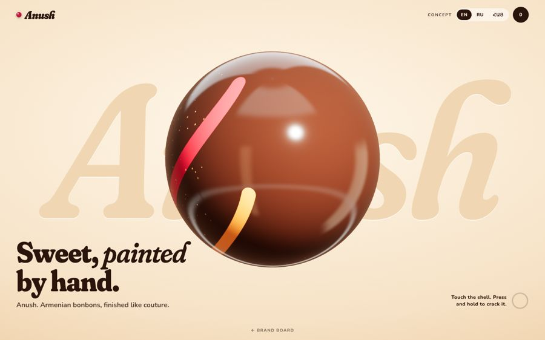
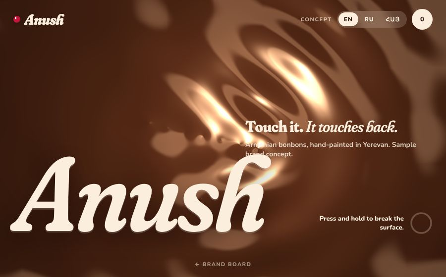
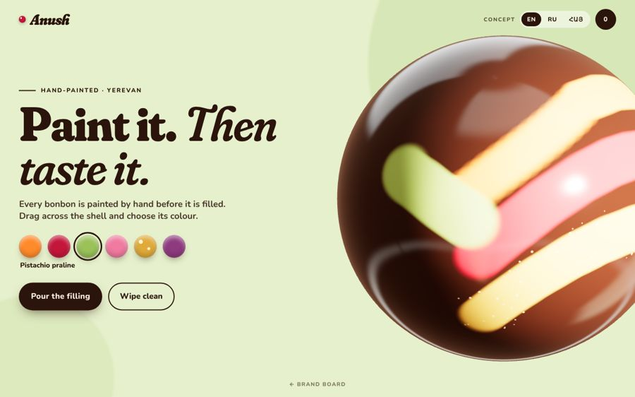

Fictional brand · label “Concept” · all prices and facts are samples
Edible couture.
Step 2 for approval: three names, the wordmark, palette, type, the 16 bonbons, the site structure, and three live openings to touch. My recommendation is at the end of each part.
01 · Name
Three names, one to choose.
Anush
Անուշ · “sweet”, and what Armenians say at the table: enjoy.
ENSweet, painted by hand.
RUСладость, написанная от руки.
HYՁեռքով նկարված անուշ։
Pro: a native word, two syllables, the same in all three scripts, and the name is already a toast. Risk: it is also a common given name (and exists in other food brands), so domain and trademark must be checked.
Nur
Նուռ · “pomegranate”, the national fruit. Also “light” in neighbouring languages.
ENA little jewel, hand-painted.
RUМаленькие драгоценности ручной росписи.
HYՓոքրիկ գոհար՝ ձեռքի նկարով։
Pro: shortest, strong red identity, fits “jewel colours”. Risk: tied to one flavour; the Turkic/Arabic meaning of “light” may blur the Armenian story.
Jan
Ջան · the Armenian “dear”, said to people you love.
ENSweets for people you love.
RUКонфеты для тех, кого любишь.
HYԱնուշ՝ սիրելիների համար։
Pro: the most playful and gift-minded. Risk: in English and Russian it reads as the common name Jan, and ջան is colloquial, so it feels less “couture”.
All Armenian and Russian lines are drafts written by me. Ilona (or a native copywriter) must approve every HY line before any public use.
02 · Wordmark
A name you can eat.
A soft, heavy italic wordmark with a glossy bonbon dot as the mark. The Armenian wordmark is set in its own serif, so it is never a translation of the Latin one.
03 · Colour
Cocoa and cream, jewels on top.
Cream is the page. Cocoa is the ink. Each bonbon’s own colour takes over a section as you scroll, so the site changes colour like a box does when you open it.
Cream
#FBF0E1
Cocoa
#2A140C
Apricot
#FF8A2B
Pomegranate
#C4163A
Pistachio
#A8CF5A
Rose
#F07AA0
Gold dust
#E0A93A
Mulberry
#8E3A7E
04 · Type
A sensual serif, a warm sans.
Display · Fraunces (soft, wonky, italic)
Sweet, painted by hand
Russian · Noto Serif
Сладость, написанная от руки
Armenian · Noto Serif Armenian
Ձեռքով նկարված անուշ
Body · Nunito / Noto Sans Armenian
Orchard apricot, mountain thyme, a thin glossy shell. Այգու ծիրան, լեռնային ուրց, բարակ փայլուն թաղանթ։
Not used before: Forum, Manrope, IBM Plex, Archivo are all avoided. Fraunces and Noto Serif Armenian lack a shared italic, so Armenian carries emphasis through weight, not slant. A custom Armenian display face is the upgrade path.
05 · Collection
Sixteen bonbons.
Armenian character with classics. Each has its own colour, which drives the section it appears in. “HY” is shown only where I am confident of the word; the rest are marked “HY to be written”.
Sample pricing (not real): 4 pcs 4,800 AMD · 9 pcs 10,200 · 16 pcs 17,600 · 25 pcs 26,500. Larger boxes cost less per piece, which is the lever for “bigger boxes”.
44,800 AMD1,200 per bonbon
910,200 AMD1,133 per bonbon
1617,600 AMD1,100 per bonbon
2526,500 AMD1,060 per bonbon
06 · The first five seconds
Three openings, live.
Each is a working preview in WebGL. Move the cursor or a finger over them. Open on a phone too.

A · Touch the shell
The glossy bonbon
Light glides over a hand-painted shell and the chocolate ripples where you touch it. Press and hold: it cracks, bursts, and the filling colour floods the screen into the next section.
Strongest at: “it makes me hungry”, and the cleanest hand-off into the collection.
Open A →
B · Molten surface
The chocolate itself
The whole screen is liquid chocolate. Touch ripples it, the light follows your finger, and a long press tears it open to pomegranate.
Strongest at: a pure, sensory first impression. Weakest at: brown on brown, so the brand colours arrive only after the tear.
Open B →
C · Paint the shell
You are the painter
A giant bonbon breaks out of the frame. Drag to paint it in jewel colours; the whole page takes the colour you choose, then “Pour the filling” floods it.
Strongest at: the brand idea (hand-painted) and the sales path, since the painted bonbon becomes the first one in a box.
Open C →
My recommendation: C as the hero, with A’s crack-and-flood as its finale (already how “Pour the filling” ends). B’s liquid surface stays in reserve as the transition into the Build-Your-Box section.
07 · Structure
One page that sells, and the pages behind it.
- Home (scroll story)
- Hero → crack → colour flood
- Horizontal-scroll collection
- Build Your Box teaser
- Occasions, atelier story, corporate, diaspora, workshops, FAQ
- Collection
- 16 bonbon pages: cut-open view, tasting notes, ingredients, allergens, best before, pairing
- Build Your Box (signature)
- 4/9/16/25, drag or tap with physics, ribbon, lid ties itself, handwritten card, share by link, AMD price
- Flavour finder (quiz → ready box → add to box)
- Occasions
- New Year, Valentine’s, March 8, weddings and christenings, birthdays
- Gifting
- Yerevan delivery (date, slot, recipient, surprise) and “Send to Armenia” in AMD / USD / EUR / RUB
- Corporate
- Logo on lid mock-up, quantity tiers, quote form
- Atelier story · Workshops (calendar booking) · Pairing guide · Cart and demo checkout (no real payment) · FAQ
08 · Self-critique
What I’d fix before you see more.
- Generic? A glossy brown sphere is a common WebGL demo. What lifts it: the hand-painted couture strokes, the cracking into filling colour, and the colour taking over the page. Without the paint, A and B are nice but could be anyone’s.
- Like Kristelle or the other showcases? I could not see Kristelle (not indexed), so I cannot prove it. Against Ararat and EURO.G: no dark bands, no grid, no mono labels, serif is soft and wonky not classical, cream not basalt. B is dark brown, which is the one place it leans cinematic: that is why I rank it last.
- Still weak: the shell lacks a macro-photo feel (no cocoa dust, no hands). The cut-open view and the “making of” scenes will need the Canva campaign images. The shards read as flat triangles in the preview and need real thickness in the build.
- Performance: I tested in a software renderer only. Real phones should be far faster, but the molten shader (B) is the heaviest and needs a lower-resolution mode.
- Armenian: my Armenian is a draft. The risk of translated-sounding copy is real until a native pass.